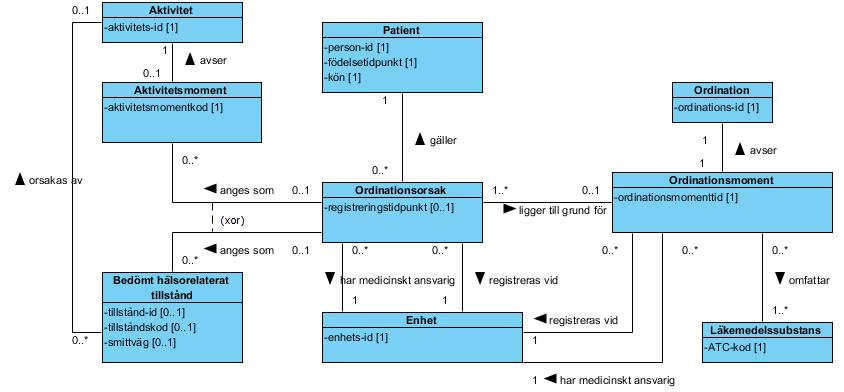
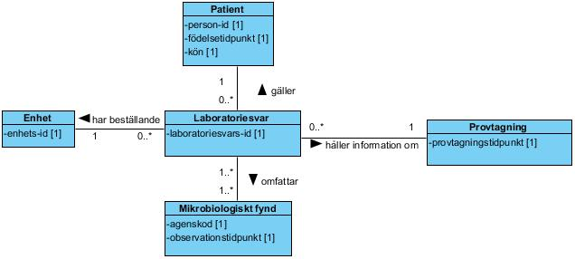

This fragment is not visible to the reader
| Type | Reference | Content |
|---|---|---|
| web | www.inera.se |
IG © 2024+
. Package inera.followup-processdevelopment-infections#1.0.2-snapshot based on FHIR 4.0.1
. Generated 2026-11-09
Links: Table of Contents | QA Report |
| web | bitbucket.org | Bitbucket |
| web | bitbucket.org | Bitbucket issues |
| web | bitbucket.org | Version 1.0.2 · commit b9bb3968f778 |
| web | oskthu2.github.io | Alla tjänstedomäner · Alla tjänstekontrakt |
| web | oskthu2.github.io | Alla tjänstedomäner · Alla tjänstekontrakt |
| web | bitbucket.org | zip · källkod |
| web | bitbucket.org | zip · källkod |
| web | bitbucket.org | källkod |
|
img_002.jpeg  |
|
img_007.jpeg  |
|
tree-filter.png
|